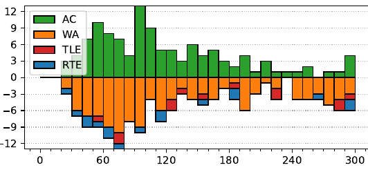

47th ICPC World Finals
Problem authors: Jakub Onufry Wojtaszczyk and Arnav Sastry
Solved by 117 teams.
First solved after 21 minutes.
Shortest team solution: 1733 bytes.
Shortest judge solution: 1341 bytes.

This was a relatively easy problem. Let us model the three colors as red = 0, green = 1, and blue = 2. Then the effect of pressing a button is that all the lights controlled by the button are incremented by 1 modulo 3.
Let xi be the (unknown) number of times we press button i. Then the requirement that a light ℓ controlled by buttons i and j must turn red becomes the equation cℓ + xi + xj = 0 (mod 3), where cℓ denotes the initial color of this light. Note that if either xi or xj is known, then this equation lets us immediately calculate the value of the other one. This means that if we consider the implied graph where two buttons i and j are connected if they control the same light, then based on the value xi for one button we can propagate and calculate the values within the entire connected component of that button.
This leads to the following linear-time algorithm: for each connected component of the graph, pick an arbitrary button i, try all 3 possible values xi = 0, 1, 2, and propagate the result. If an inconsistency is found (some equation is not satisfied), then this value of xi is invalid. Otherwise, check the total number of button presses (sum of xi's in the component). If all 3 possible choices of xi are invalid then there is no solution, otherwise pick the one that leads to the smallest number of button presses within this component.
In the problem there could also be some lights that were controlled by a single button, leading to an equation of the form cℓ + xi = 0 (mod 3) which immediately determines xi. One could special-case the handling of these and propagate their values first, but it is probably less error-prone to simply include them in the inconsistency check in the above algorithm instead.